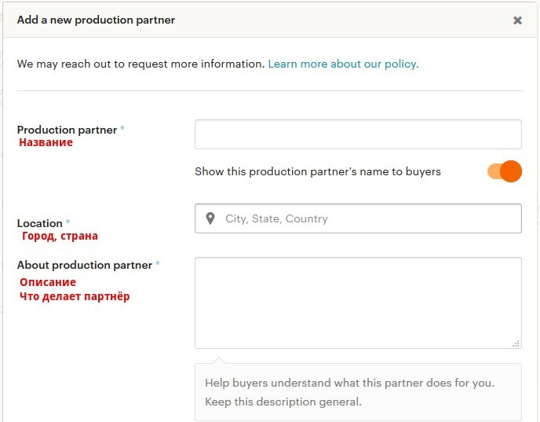
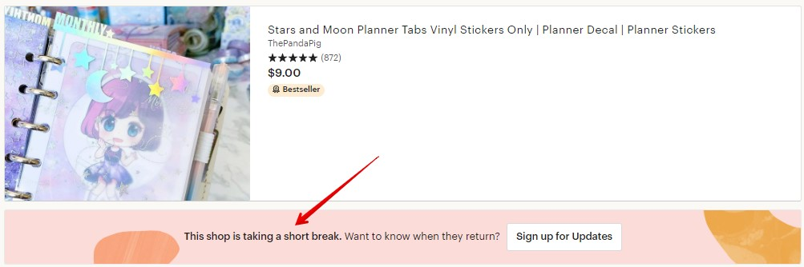
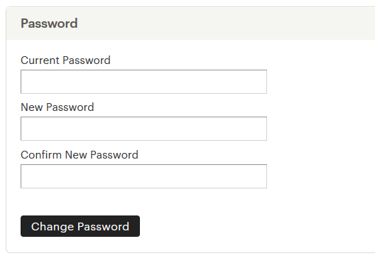
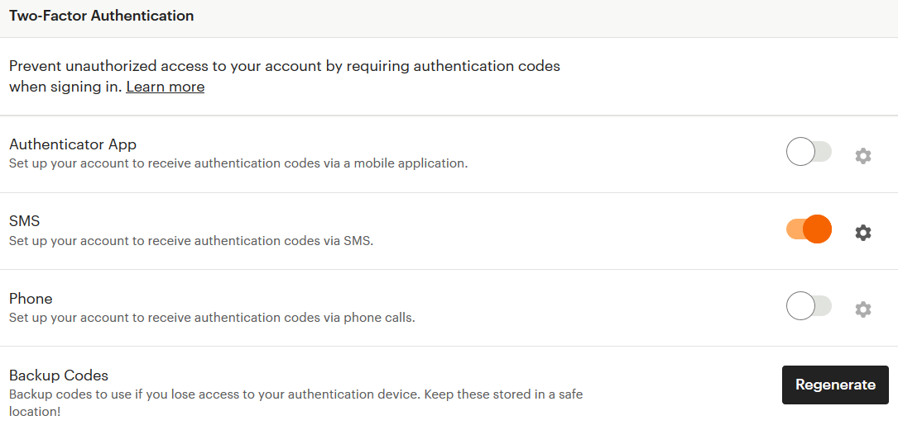
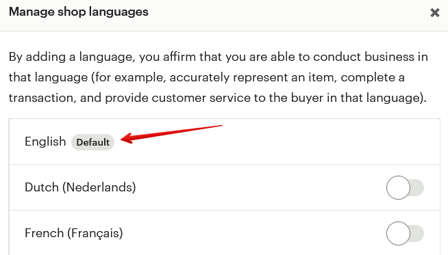

Можно ли добавить помощника, который будет заходить со
своего компьютера
Вам необходимо добавить помощника в список членов команды магазина Shop
members, указав его имя и фотографию, а также роль, которую он будет выпол-
нять (например, Customer Service). После этого он сможет заходить в магазин
из-под вашего аккаунта (на Etsy заходить в магазин можно только из под акка-
унта владельца).
Если помощника не указать в настройках, то есть вероятность, что Этси может
заблокировать магазин.
Сколько может быть членов команды в магазине
На Etsy нет ограничений на количество сотрудников магазина. Можете доба-
вить как одного, так и двадцать участников.
Как указать компанию, которая помогает производить то-
вары
На Etsy можно указать не только членов команды, но и компании, которые по-
могают в производстве товаров.
Эти компании делают что-то по вашему заказу. Например, печатают, отшивают,
режут на станке и т.п. в соответствии с вашим дизайном. Если вы покупаете в
магазине готовые материалы (например, ткань, нитки, бусины), то это не парт-
нёр по производству.
Добавить партнёра можно при добавлении/редактировании листинга.

Далее необходимо указать информацию о компании: название, местоположе-
ние и описание той помощи, которую вам эта компания оказывает.
Если выключить оранжевый переключатель, то покупатели не увидят название
партнёра. Вместо этого вы можете написать лишь общее описание, например,
«Швейная фабрика».
Чуть ниже нужно указать данные о партнёрстве, которые видят только сотруд-
ники Etsy.

Why are you working with this partner? (Почему вы работаете с этим партнёром):
• I don’t have the technical ability or equipment to make it entirely by myself
(у меня нет технической возможности или оборудования, чтобы делать
всё самостоятельно)
• I have outgrown my current production space (я перерос размеры своей
студии/мастерской)
• I need help meeting demand for this product (мне нужна помощь, чтобы
удовлетворить спрос на этот товар)
• Other (другое)
What is your role in the design process? (Какова ваша роль в процессе дизайна
товара):
• I design everything myself (дизайн целиком мой)
• I design everything, but get technical help (дизайн целиком мой, но мне
нужна техническая помощь)
• I collaborate with my shop members to design my products (мы делаем ди-
зайн вместе с членами команды)
• I have an idea, and work with independent designers to realize it (у меня
есть идеи, над которыми мы работаем с независимыми дизайнерами)
• I collaborate with my production partner to design my products (мы делаем
дизайн в сотрудничестве с партнёром)
• I contract with independent designers and have rights to their work (я за-
ключаю договор с независимыми дизайнерами, все права принадлежат
мне)

What is this partner’s role in the production process? (Какова роль вашего парт-
нёра в процессе производства):
• They make a component of my product, and I do the rest (они производят
часть товара, остальное делаю я)
• They create a finished product that I then alter/customize (они делают го-
товый товар, который я потом видоизменяю)
• They create a finished product, then I add branding and packaging (они про-
изводят готовый товар, а я его упаковываю и добавляю элементы бренда)
• They do everything for me (они всё делают сами)
После выбора всех полей нажимаем Save partner и сохраняем партнёра.
Теперь при добавлении/редактировании листинга вы увидите список добав-
ленных партнёров. Отметьте галочкой тех, кто участвовал в создании выбран-
ного товара.
Отредактировать или удалить партнёра можно на странице Shop Manager —
Settings — Production partners.
Как изменить часовой пояс магазина
Если вы хотите, чтобы графики посещаемости в магазине показывали инфор-
мацию не по времени США, а по вашему часовому поясу, то нужно изменить
временную зону.
Для этого зайдите на страницу Settings – Options и выберите страну и город.


После этого все графики перестроятся на новый часовой пояс.
Как отправить магазин в отпуск
Если ваш отпуск краткосрочный (например, несколько дней или неделя), то вы
можете увеличить время на отправку в Shipping Profile и дополнительно сооб-
щить, например, в Announcement, что сможете отправить заказы после такой-то
даты.
Если же вы уезжаете надолго (2 недели, месяц), то можно перевести свой мага-
зин в режим отпуска. Для этого перейдите в меню Shop Manager – Settings –
Options.
Далее выберите вкладку Vacation Mode и выставите значение On в первом па-
раметре.
Чуть ниже стоит написать текст (Vacation Announcement), который увидят посе-
тители вашего магазина (например, что вы в отпуске и вернётесь в такой-то
день).


И второе поле Messages Auto-Reply – автоответчик, то есть сообщение, которое
получат люди, написавшие вам личное сообщение.
Нажимайте кнопку Save – и всё, магазин «на каникулах».
Теперь, при переходе в него вы увидите текст из поля Vacation Announcement и
кнопку Email me when they're back (уведомить, когда магазин снова откроется).
А если зайти в любой листинг (например, при переходе из Favorites), то он будет
выглядеть так: сверху видна фотография товара и его заголовок, а снизу
надпись о том, что магазин взял небольшой перерыв. Кнопка Sign up for Updates
перебросит посетителя на главную страницу магазина.



По возвращению из отпуска не забудьте вернуть параметр Vacation Mode в ре-
жим Off.
Обращаю внимание, что в настоящее время отправка магазина в отпуск может
негативно сказаться на рейтинге листингов – скорее всего они потеряют пози-
ции в поиске, так как не будут показываться в поисковой выдаче в это время.
Как закрыть магазин
Если вы решили закрыть магазин, то для этого перейдите в меню Shop Manager
– Settings – Options и откройте вкладку Close Shop.
Если у вас есть неоплаченные счета или открытые кейсы, то Etsy не даст вам
закрыться.
Если же всё в порядке, то Этси задаст несколько вопросов о причинах закрытия
– и в течение 30 минут магазин пропадёт с радаров поиска и покупателей.

Если вы спустя какое-то время решите снова открыть магазин, то для этого пе-
рейдите в раздел меню You – Account settings – Your Closed Shop и выберите
Reopen Shop.
Вся информация и листинги останутся в том же виде, как вы их оставили.
Как сменить email магазина
Если вы хотите изменить электронную почту магазина, то перейдите на стра-
ницу You - Account Information/Account Settings.
Здесь в разделе Email вы увидите:
• Текущую почту (Current email)
• Статус почты (Status) – подтверждено (confirmed) или нет
• Затем дважды введите адрес новой почты – в поле New Email и Confirm
New Email
• И последнее – необходимо ввести текущий пароль от магазина (Your Etsy
Password)
После этого нажмите кнопку Change Email.


После этого зайдите в свою почту и проверьте письмо от Etsy. Там нужно будет
нажать на кнопку Confirm your email – подтвердить новый электронный адрес.
Как сменить пароль от магазина
Чтобы сменить пароль для входа в магазин, перейдите на страницу You - Account
Information/Account Settings.
Введите свой текущий пароль (Current Password), и дважды напишите новый
(New Password и Confirm New Password). После этого нажмите кнопку Change
Password.

Что делать, если забыл(а) пароль от магазина
Если вы забыли пароль, но у вас есть доступ к электронной почте, к которой
привязан магазин, то можно сделать следующее.
Перейдите по следующей ссылке:
https://www.etsy.com/forgot_password.php
На этой странице введите электронную почту магазина. Туда придёт письмо со
ссылкой для сброса пароля. После чего откроется страница, где нужно ввести
новый пароль.
После этого снова проверьте электронную почту и с помощью нового письма
подтвердите изменение пароля.
Как защитить аккаунт магазина
Для многих Etsy-магазин – это основной источник дохода. Поэтому важно за-
щитить его от возможного взлома или кражи паролей.
Для этого перейдите на страницу You - Account Information/Account Settings – Se-
curity.
Здесь вы можете настроить двухфакторную аутентификацию – кроме ввода ло-
гина-пароля для входа в магазин понадобится сделать ещё одно действие.
• получать специальный код в мобильном приложении Etsy (Authenticator
App)
• получить СМС-код (SMS)
• получить код с помощью звонка на телефон (Phone)



Кроме того, вы можете сохранить себе на компьютер (или в другое безопасное
место) бэкап-коды (Backup Codes), которые можно будет ввести, если вы поте-
ряете доступ к устройству, куда приходят спецкоды для аутентификации.
Выберите среди этого тот вариант, который вам больше всего удобен.
Также на этой странице вы можете включить оповещение на email при каждом
входе в ваш Etsy-аккаунт (Security Settings). И если это будете не вы, то сразу
можно быстро отреагировать и, например, сменить пароль или написать Etsy.
А ещё чуть ниже – список последних авторизаций (Sign In History) и устройств,
с которых заходили в магазин (Device History).
5. Основы Etsy SEO (продви-
жение магазина)
Как работает поиск Etsy (Etsy SEO). Что влияет на позиции
Точные правила, по которым работает поиск Этси, известны только админи-
страции площадки. Продавцам остаётся лишь строить догадки и внимать под-
сказкам, которые сообщают представители площадки.
В настоящий момент Etsy заявляет, что на позиции вашего товара в поиске вли-
яют следующие факторы:
• заголовок
• тэги
• атрибуты
• дата добавления/обновления листинга
• цена товара
• условия доставки
• рейтинг магазина
• рейтинг листинга
• жалобы на магазин
• страна магазина (в некоторых случаях)
• возраст магазина/листинга (в некоторых случаях)
Вся проблема в том, что никто не знает, как сильно и в какой степени влияют
каждый из этих параметров на позиции.
Заголовок и тэги должны быть релевантны поисковому запросу покупателя. То
есть, если человек ищет «красный вязаный шарф», то в заголовке и тэгах ли-
стинга должна присутствовать эта фраза – иначе ваш листинг окажется далеко
позади конкурентов (стоит учесть, что этот момент также зависит от количества
конкурентов по искомой фразе).
Атрибуты товара – дополнительные параметры листинга, которые работают
примерно как тэги. Например, если покупатель ищет в поиске «синий шарф»,
то в поиск попадут в том числе товары, у которых атрибут «Цвет товара» будет
указан как «синий».
Чем новее ваш листинг, тем больше шансов, что он окажется выше конкурентов.
Поэтому имеет смысл периодически обновлять ваши товары (делать Renew).
Нередко бывает, что чем дороже товар (относительно листингов конкурентов),
тем он дальше в поиске. Отчасти это может быть из-за того, что более дешевые
товары чаще покупают, а потому их показывают выше.
Со слов Etsy, положительно сказывается на позициях наличие бесплатной до-
ставки товара.
С 30 июля 2019 года, если у товаров была бесплатная доставка в США (сразу
или при заказе от 35 долларов и выше), то изделия получали небольшой прио-
ритет в поисковой выдаче для жителей США. Правда через несколько месяцев
после этого нововведения для большинства поисковых запросов приоритет пе-
рестал работать.
Чем выше средняя оценка отзывов в магазине, тем лучше позиции листингов.
Это и логично – Этси старается показывать покупателям только проверенные и
заслуживающие доверия магазины.
Под рейтингом листинга админы подразумевают количество просмотров, до-
бавление в избранное (фавориты) и покупки товаров. Например, если ваш то-
вар часто покупают – значит он качественный и отвечает запросам покупате-
лей. А, следовательно, его стоит показать повыше.
Если покупатели недавно открывали споры с вами и вашим магазином, а также
на вас жаловались за нарушение авторских прав – то это может негативно ска-
заться на ваших позициях.
Для покупателей из Канады, Австралии, Великобритании, Германии и Франции
(а также некоторых других стран Евросоюза, например, Голландии) по некото-
рым фразам чуть выше показываются товары из их местных магазинов.
Также Etsy подтвердждали, что на короткое время поднимают в результатах
поиска новые магазины (их листинги), чтобы дать им шанс совершить первые
продажи. А затем «возвращают» их на то место, которое они «должны» зани-
мать.
На позиции может также повлиять степень «заполненности» вашего магазина
– есть ли у вас Policies, раздел About и т.п.
Так как никто достоверно не знает, что именно и в какой степени влияет на
позиции, остаётся только планомерно и постепенно улучшать все составляю-
щие Etsy SEO.
Как писать заголовки листингов
Самое главное правило, которое нужно учесть при составлении заголовков
(title) листингов – в них должны быть фразы, которые вводят в поисковой
строке покупатели Etsy. Например, если вы продаёте кошачьи домики из шер-
сти, то в названии желательно прописать фразу «wool cat bed» или «cat bed
wool».
Обращаю внимание, что для части поисковых запросов (чаще всего популяр-
ных) порядок слов также имеет значение. Выше (при условии, что другие пара-
метры равны) чаще всего будет тот листинг, у которого фраза содержится в за-
головке точно так, как покупатель её написал в строке поиска.
Также Etsy советует основной поисковый запрос писать ближе к началу заго-
ловка листинга.
Постарайтесь при помощи мозгового штурма или других техник придумать мак-
симум фраз, которые люди могут вводить в строку поиска:
• цвет изделия
• размер
• повод (свадьба, день рождения)
• материал
• и т.п. (бонусный файл «Чек-лист поиска фраз для заголовков и тэгов»)
Максимальная длина заголовка – 140 символов.
Как писать тэги листингов
Для тэгов действует то же самое правило, что и для заголовков листинга – в них
должны быть фразы, которые покупатели вводят в поиск. И выше в поиске чаще
всего будут именно те листинги, где фраза присутствует как в заголовке, так и
в тэгах (особенно важно для популярных запросов).
То есть, если и в заголовке, и в тэгах будет фраза «cat bed wool», то ваш листинг
по этому поисковому запросу должен быть достаточно высоко в поиске.
Вы можете добавить для каждого листинга 13 тэгов. Рекомендую заполнять их
все – чтобы увеличить шансы быть найденным.
В идеале, поисковый запрос должен содержаться в тэге целиком. Но тэг не мо-
жет быть длиннее 20 символов (для английского языка).
Соответственно, если ваш поисковый запрос не умещается в эту длину, попро-
буйте разбить его на несколько тэгов. Например, фразу «dark blue dangle ear-
rings» можно разбить на тэги «dark blue earrings», «blue dangle earrings» и т.п.
Постарайтесь, чтобы тэги были в 2-3 слова. Это лучше, чем будет 4 тэга по 1-му
слову «dark», «blue», «dangle» и «earrings».
Влияет ли страна магазина на позиции в поиске
На данный момент есть минимум 6 стран, покупателям которых в результатах
поиска в приоритете показываются товары из их страны, а потом – все осталь-
ные. Это Канада, Австралия, Великобритания, Германия, Франция и Голландия.
Для покупателей из других регионов поисковые результаты одинаковы.
Это касается физических товаров.
Если же у вас цифровой товар, то результаты поиска одинаковы для всех стран.
То есть цифровые товары из Германии не будут показаны выше для немцев.
Почему я не могу найти свой листинг в поиске
Для начала нужно понять, не наложены ли на ваш магазин какие-либо «санк-
ции» со стороны Этси. Для этого введите в строку поиска целиком название
вашего листинга (или большую его часть). Если листинг нашёлся – значит с ним
всё в порядке.


Причина 1 – высокая конкуренция
Теперь важно понять, почему вы не можете найти свой листинг в поиске. Чаще
всего причина в том, что он находится на очень дальних страницах. Например,
вы вводите фразу «red dress» и надеетесь, что ваш свежедобавленный товар
будет где-то наверху. Но давайте посмотрим, сколько у вас конкурентов по
этому запросу.
Если учесть, что основная часть покупателей живёт в США, то для чистоты экс-
перимента стоит указать здесь United States и посмотреть, что произойдёт с
числом конкурентов.

Их стало ещё больше. Вы конкурируете со 223 000 товаров со всего света! Не
удивительно, что ваш листинг может находится далеко от первых страниц ре-
зультатов поиска.
Чтобы избежать такой ситуации, следует продвигаться по менее конкурентным
запросам. Например, «long red dress» (38 000 конкурентов) или «red long sleeve
dress» (26 000 конкурентов). Да, такие запросы ищут не так часто. Зато и конку-
рентов у вас куда меньше.
Причина 2 – плохие заголовки и тэги
Ещё одна причина может быть в том, что у вас плохо составлены заголовки и
тэги. Например, листинг с красным платьем у вас озаглавлен «Christmas dress».
Да, оно красное и подходит для Рождества. Но если вы хотите, чтобы платье
находили по запросу «red dress» или «long red dress», то именно эти фразы
должны быть в заголовке вашего товара.
То же самое касается и тэгов. Не стоит писать их отдельными словами «red»,
«dress» и «long» - сделайте тэги из 2-3 слов («red dress» и/или «long red dress»).
Причина 3 – русский язык магазина
Также очень частая проблема. Вроде и заголовки составлены хорошо, и тэги
идеальны – но товар всё равно никак не находится и просмотров нет. Всему
виной – язык магазина, который вы выбрали при регистрации. Если вы указали
там не английский – просмотры из поиска будут незначительными.


Как понять, ваш ли это случай? Перейдите в раздел Shop Manager – Settings –
Languages and translations. Нажмите кнопку Start translating your shop.
Перед вами откроется список языков, включеных в вашем магазине. Посмот-
рите, у какого из них указано Default (по умолчанию).
Если это не английский English, то вам нужно:
1) добавить в магазин дополнительный язык (английский) и продублировать
все свои тексты на нём
2) написать админам Etsy и попросить поменять основной язык вашего ма-
газина на английский – обычно спустя пару дней сотрудники Etsy выпол-
няют эту просьбу.
Можно и не писать админам, а просто подключить английский язык в магазине
(как второй, дополнительный). После этого при добавлении/редактировании
каждого листинга у вас появится 3 новых поля: English title, English description и
English Tags. Скопируйте сюда текст из соответствующих «оригинальных» полей
(для удобства Etsy приводит их справа).

Сохраняйте листинг – и можете проверять поиск. Теперь ваши товары смогут
найти англоязычные покупатели!
Почему я не могу найти свой магазин в поиске
Если вы не можете найти через поиск Этси не только свои листинги, но и мага-
зин целиком, то дело может быть в том, что Etsy сомневается в оригинальности
ваших товаров (т.е. в том, что их делаете именно вы).
Чтобы это исправить, свяжитесь с ними через раздел Help и расскажите о том,
что вашего магазина нет в поиске, спросите, в чём может быть проблема.
Если дело именно в вышеописанной причине, то админы попросят вас прислать
доказательства того, что вы – автор товаров. Например, они могут попросить
прислать фотографии процесса работы, ваше рабочее место и т.п. Если у вас
всё в порядке с этим, то вскоре ваш магазин появится в поиске.
Хочу отметить, что каждый новый магазин проходит проверку на соответствие
всем правилам. Поэтому важно уже с самого начала не допускать ошибок.